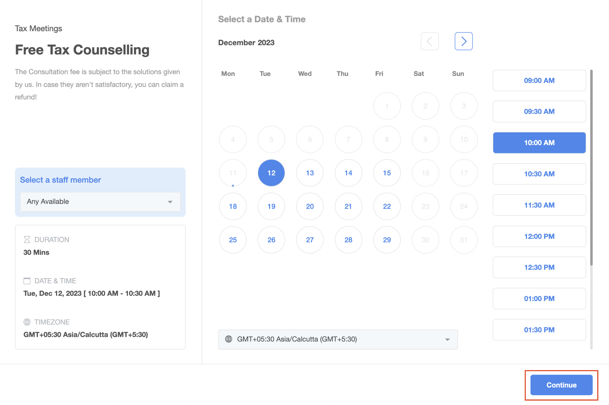
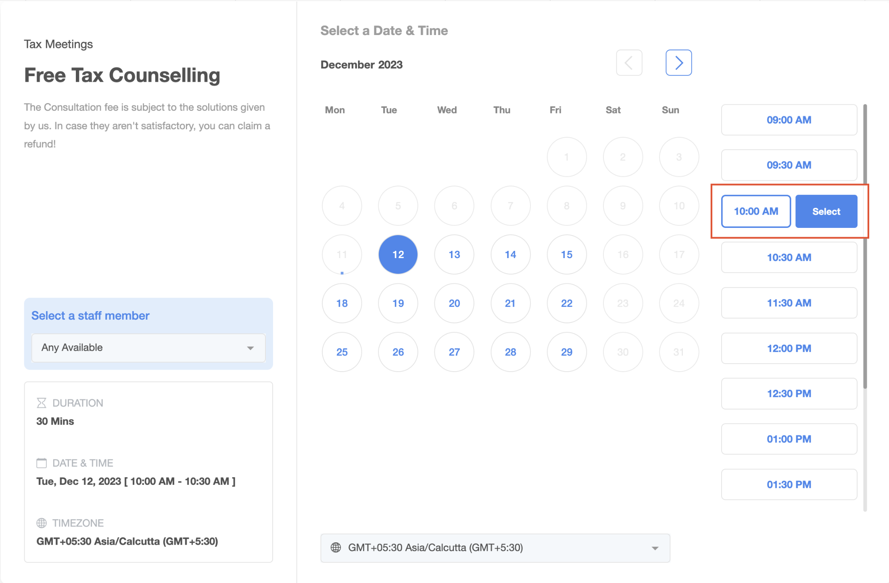
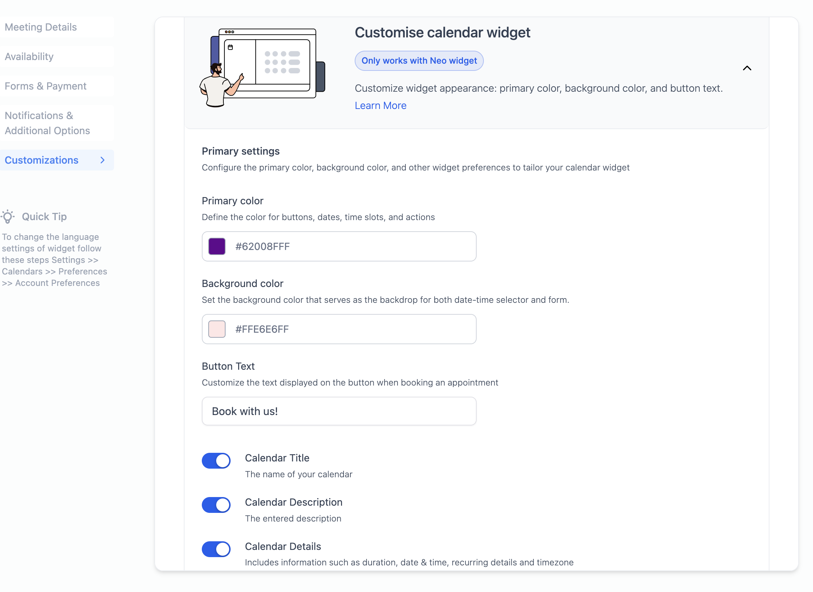
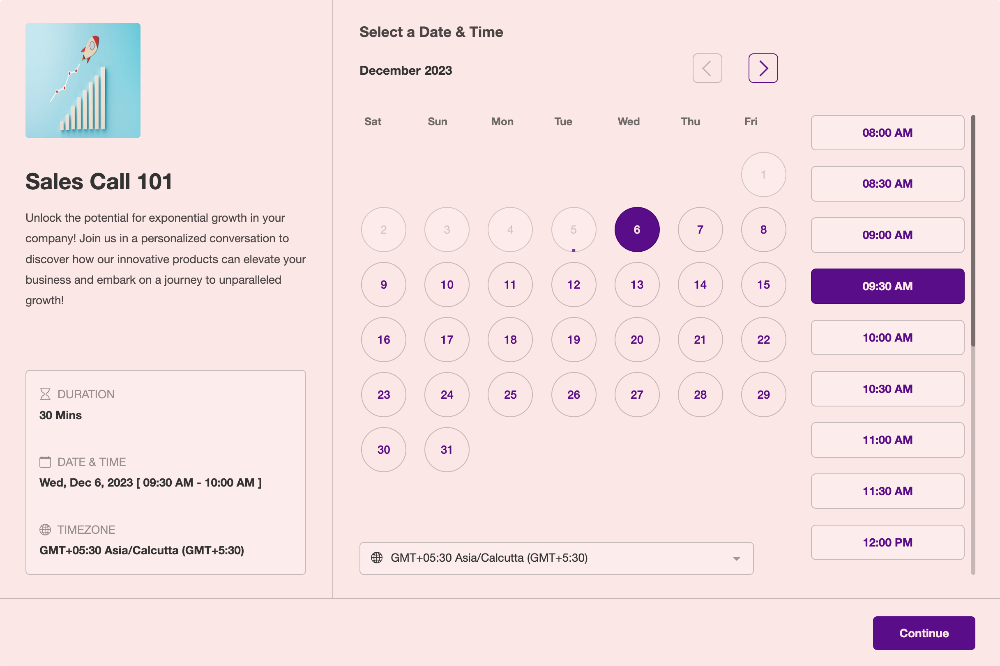
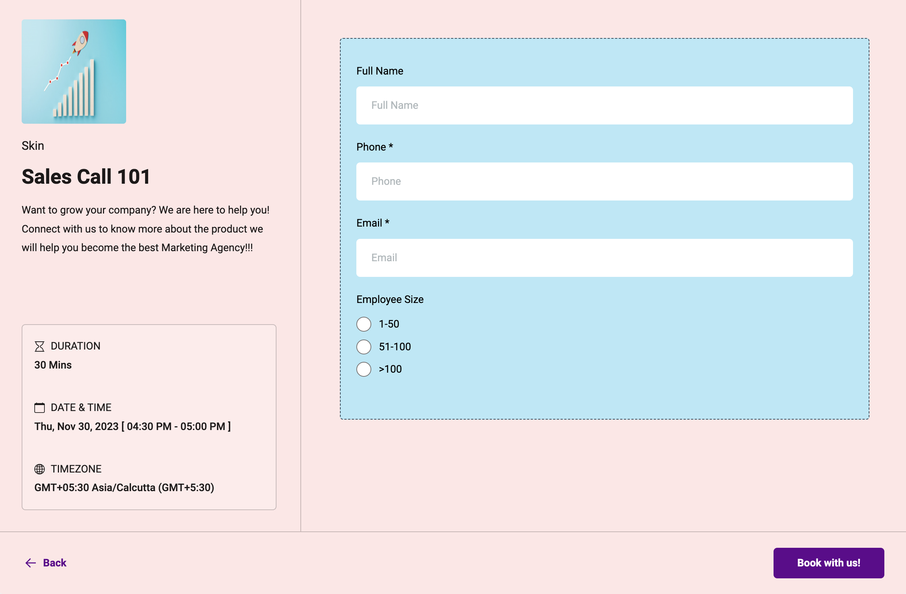
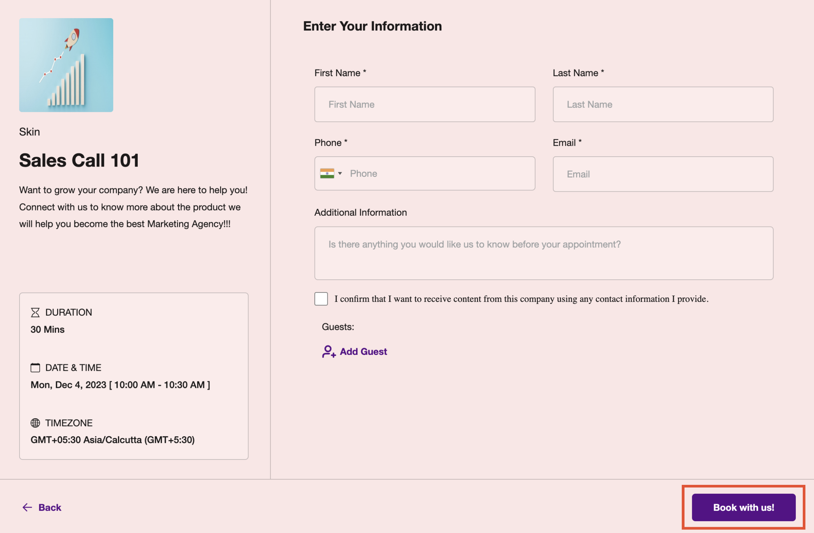
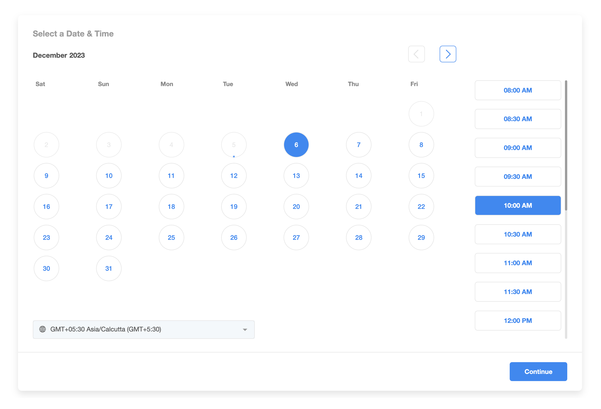
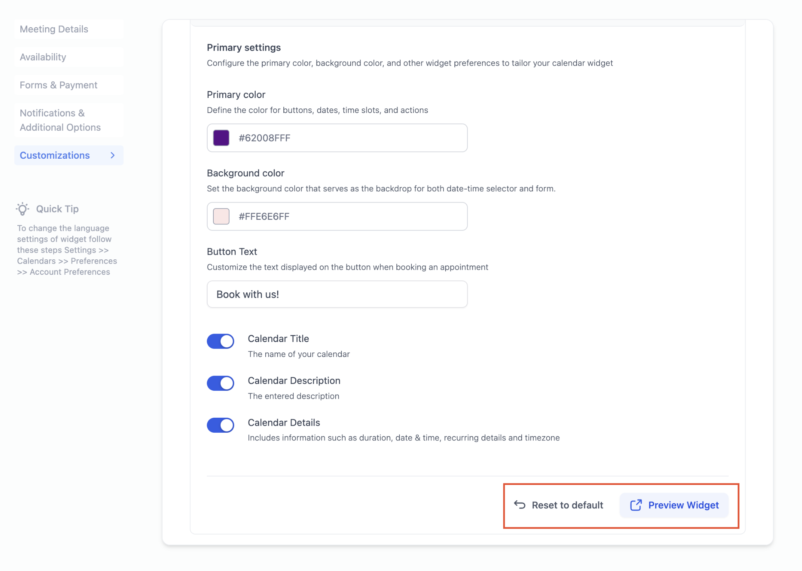

- What is Calendar Widget Customization?
- How to Customize your Widget?
- Frequently Asked Questions (FAQs)
- Pro Tip
Calendar Widget - 'Continue' Button Update
Quick heads up – we've jazzed things up a bit and moved the Continue button in the calendar widget to a new spot. If you have applied any CSS customizations, kindly verify and adjust them accordingly to align with the updated placement.


What is Calendar Widget Customization?
Calendar Widget Customization is designed to give you control over the appearance and functionality of your widget. With this powerful feature, you can personalize your widget according to your preferences, making it uniquely yours.
How to Customize your Widget?
Navigate to Calendar Settings
Click on "Edit" for the specific calendar you wish to customize
Head to the "Customizations" tab.
Note: Widget Customizations work ONLY with NEO WIDGET
Understanding Customization Options:
Here, you have the freedom to tailor your calendar widget to suit your preferences. Explore the following customization options:
- Primary Colour: This will impact buttons, dates, time slots, and various actions within the widget such as Staff Selection, Add Guests etc.
- Background Colour: The background color sets the tone for both the date-time selector and the form. If you've got a custom form, its background will mirror the chosen background color, but the form's fields are determined by your specific custom form settings.


Note: When using custom forms, make sure the theme syncs up with your widget customizations for a seamless look.Example of Customized Widget with CUSTOM FORM

- Button Text: Customize the text displayed on the button when booking an appointment. This is the text that will be displayed on the final step of booking the appointment. Examples: Book now, Schedule Meeting, Book Appointment.

- Hide Calendar Details: You can now hide the calendar name, description, and details such as duration, date & time, recurring details, and timezone from the left panel.
Note: If you wish not to show the logo, simply remove it from the meeting details tab
- Preview Your Changes: Utilize the "Preview Widget" feature to visualize how your changes will appear during the appointment booking process. Each time a new change is made, you will need to click on the "Preview Widget" option to see the updated setting.
- Resetting to Default: If needed, the "Reset to Default" option will revert all customizations to the default blue and white calendar widget settings.

Frequently Asked Questions (FAQs)
Q: Which calendars support customization?
A: The customization feature is available for all calendar types, including Event, Round Robin, Class Booking, Collective, and Service Calendars.
Note: Customizations will not work in the Service MenuQ: Can I incorporate a custom form?
A: Absolutely! You can add a custom form, but ensure that your custom form theme complements the overall widget customizations.
Q: What if I have added CSS customizations?
A: CSS customizations take precedence over the widget settings. Your custom styles will be prioritized, ensuring that your personalized design choices shine through in the calendar widget
Q: I want the entire left panel disabled, but even after turning off settings, I still see it. What should I do?
A: To fully disable the entire left panel, make sure to check the following settings:
Calendar Details Settings:
- Disable Calendar Name.
- Disable Calendar Description.
- Disable Calendar Details.
Logo Removal:
- Remove any logo associated with the calendar.
Customizations Tab:
- Disable "Allow Select Staff" option from the Customizations tab.
Pro Tip
For the best visual results, we recommend selecting contrasting primary and background colors. Striking a balance between light and dark colors often yields the most aesthetically pleasing outcomes. Experiment with combinations until you find the perfect look for your customized calendar widget.